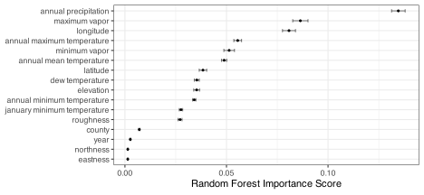
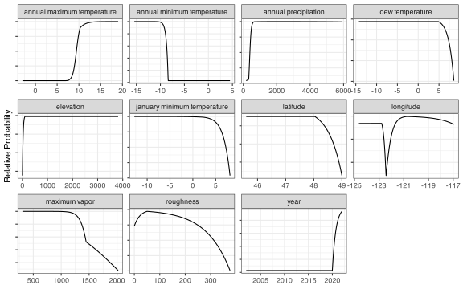
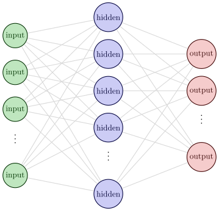
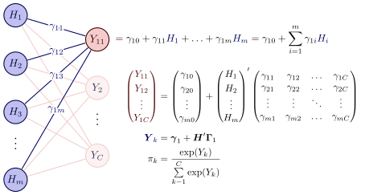
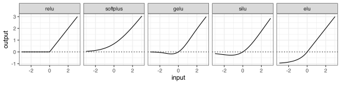

17 Complex Nonlinear Boundaries
This chapter focuses on several classes of models that naturally produce nonlinear boundaries, such as neural networks, K-nearest neighbors, and support vector machines. A separate category of models, which use tree structures, also has inherently nonlinear classification boundaries. We’ll discuss those models in Chapter 18 and Chapter 19.
In this chapter, several recurring motifs are present across different types of models. First, this involves the use of an operation that utilizes the positive part of a function, known as “hinge” or “rectifier” functions. We’ll see these in Section 17.1.2 and Section 17.4.1. Another element that will be encountered across different models is the kernel function, previously seen in Section 12.6.2. These functions are used to quantify the distance or similarity between data points (or, more specifically, vectors). Both the K-nearest neighbor and the support vector machine (SVM) models rely on these functions. Finally, the dot product between vectors plays a critical role in the important attention mechanism in neural networks (?sec-attention) as well as in SVM models (Section 17.6).
This chapter contains two sections on neural networks. The first describes the most basic version of these models, called the multilayer perceptron. The fundamentals of these models are discussed in this section. The second section explores various methodologies to enhance the performance of neural network models for tabular data, similar to their effectiveness in predicting images and text. At the time of this writing, substantial research on this topic is underway in the field. This section will also discuss one of the most effective tools for most deep learning models: attention-based transformers.
To get started, the first chapter summarizes an old, traditional model for classification, linear discriminant analysis (LDA), and shows how it can be effectively modified to produce nonlinear class boundaries.
17.1 Nonlinear Discriminants
Discriminant analysis is a classical statistical method for classification. While its prominence in the statistical learning literature has diminished in recent decades, understanding its foundations provides valuable context for several modern and highly effective classification methods. This section focuses on linear discriminant analysis (LDA).
Linear discriminant analysis (McLachlan 2005; Murphy 2012) produces linear classification boundaries and can be motivated via Bayes’ Rule. Let’s say that our training set predictors for class \(k\) are contained in the random variable vector \(X_k\) with \(p\) elements. LDA assumes that the predictor distributions within each class follow a multivariate Gaussian distribution with class-specific mean vectors but a common covariance matrix across all classes. Formally, for class \(k\), the conditional distribution of the predictors given class membership is \(X_k \sim N(\boldsymbol{\mu}_k, \boldsymbol{\Sigma})\).
To classify a new observation with predictor vector \(\boldsymbol{x}\), LDA applies Bayes’ theorem to compute the posterior probability of class membership. Given a prior probability \(Pr[Y = k]\) for class \(k\), the posterior probability is:
\[ Pr[Y = k |\boldsymbol{x}] =\frac{Pr[Y = k]Pr[\boldsymbol{x}|Y = k]}{\sum\limits_{l=1}^C Pr[Y = l]Pr[\boldsymbol{x}|Y = l]} \tag{17.1}\]
This equation is straightforward to calculate. The parameters \(\boldsymbol{\mu}_k\) and \(\boldsymbol{\Sigma}\) are estimated from the training data using their maximum likelihood estimates: the class-specific sample mean vectors \(\bar{\boldsymbol{x}}_k\) and the pooled sample covariance matrix \(\boldsymbol{S}\), respectively. The class-conditional densities (\(Pr[\boldsymbol{x}|Y]\)) are then evaluated using the multivariate normal probability density function, which modern statistical software computes efficiently. In practice, computational efficiency can be improved by calculating only the numerator of Equation 17.1 for each class, then normalizing these values to ensure the posterior probabilities sum to 1. For a new observation \(\boldsymbol{x}\), the class with the maximum posterior probability is assigned as the predicted class.
Alternatively, we can frame the prediction in terms of the discriminant function:
\[ D_k(\boldsymbol{x}) = \boldsymbol{x}'\boldsymbol{\Sigma}^{-1}\boldsymbol{\mu}_k + \frac{1}{2}\boldsymbol{\mu}_k'\boldsymbol{\Sigma}^{-1}\boldsymbol{\mu}_k + \log\left(Pr[Y = k]\right) \tag{17.2}\]
The discriminant values are conceptually similar to the linear predictor in logistic regression, taking values on the real line, with larger values corresponding to higher posterior probabilities. The predicted class is determined by identifying which discriminant function yields the largest value.
A notable advantage of LDA is its explicit modeling of the predictor covariance structure through \(\boldsymbol{\Sigma}\). This characteristic renders the method robust to moderate levels of multicollinearity among predictors. Furthermore, the framework naturally extends to multi-class problems.
However, LDA has important limitations. The method requires that \(\boldsymbol{\Sigma}\) be non-singular (invertible). When the training set contains fewer observations than predictors (\(n < p\)) or when perfect linear dependencies exist among predictors, the sample covariance matrix becomes singular and the discriminant functions cannot be computed. Additionally, the Gaussian distributional assumption is fundamental to the method’s theoretical justification. While binary indicator variables can technically be included in the model (as they are numeric), their discrete, non-Gaussian nature violates the model assumptions and undermines the probabilistic interpretation of the results. For datasets with categorical predictors or high-dimensional settings where \(n < p\), alternative classification methods may be more appropriate as we will see later.
As presented, LDA is limited as a classification tool. Its assumption of a common covariance matrix across classes restricts it to producing linear decision boundaries. While nonlinear boundaries could be induced through feature engineering (e.g., adding polynomial or interaction terms), such an approach would be better done using logistic regression.
Nevertheless, the discriminant analysis framework has led to extensions that address the various limitations of LDA. Quadratic discriminant analysis (QDA) (Ghojogh and Crowley 2019) relaxes the assumption of a common covariance matrix, allowing each class to have its own covariance structure: \(X_k \sim N(\boldsymbol{\mu}_k, \boldsymbol{\Sigma}_k)\). This modification results in quadratic decision boundaries, providing greater flexibility at the cost of estimating additional parameters. Robust variants of both LDA and QDA have been developed to mitigate the influence of outliers on parameter estimation (Hubert, Raymaekers, and Rousseeuw 2024), addressing the well-known sensitivity of maximum likelihood estimates to extreme observations. Additionally, regularized discriminant analysis methods (Friedman 1989; Pang, Tong, and Zhao 2009) introduce penalty terms that shrink the covariance matrix estimates, improving stability and predictive performance, particularly when sample sizes are modest relative to the number of predictors.
Two extensions of discriminant analysis are practically useful. The first, naive Bayes classification, represents a simplification that assumes conditional independence among predictors within each class. The second, flexible discriminant analysis (FDA), is a generalization of the LDA framework. FDA can accommodate nonlinear decision boundaries, perform implicit feature selection, and incorporate various modeling strategies, making it a considerably more versatile tool for classification problems. These methods are discussed in the following sections.
17.1.1 Naive Bayes
While LDA estimates the class-conditional density \(Pr[\boldsymbol{x}|Y = k]\) using a multivariate Gaussian distribution, naive Bayes (Hand and Yu 2001) adopts an alternative approach by decomposing this joint density into a product of univariate marginal distributions:
\[ Pr[\boldsymbol{x}|Y = k] = \prod_{j=1}^p Pr[x_j|Y = k] \tag{17.3}\]
This formulation assumes conditional independence among all predictors within each class; i.e., the predictors are all statistically independent of one another. This assumption is often violated in practice. Despite this seemingly restrictive assumption, naive Bayes classifiers can occasionally perform surprisingly well in practice.
The primary advantage of the conditional independence assumption is that it relaxes the distributional requirements for individual predictors. Unlike LDA, which requires joint multivariate normality, naive Bayes allows each predictor to follow its own distribution, which need not be Gaussian. Moreover, these distributions do not even need to be fully parametric.
For continuous predictors, kernel density estimation (Silverman 1986; Chen 2017) provides a flexible, nonparametric approach to estimating \(Pr[x_j|Y = k]\). Kernel density estimators are smoothing methods that adaptively characterize the empirical distribution of the data. A kernel function \(K(\cdot)\) is a non-negative, symmetric function that integrates to one and serves as a weighting scheme1. Common kernel functions are:
- The uniform kernel, which assigns equal weight to all observations within a fixed range
- The Gaussian kernel, \(K(u) = \frac{1}{\sqrt{2\pi}}\exp(-u^2/2)\), which assigns weights that decrease exponentially with distance from the point of interest
The kernel density estimate at a point \(u\) is constructed as:
\[ \hat{f}(u) = \frac{1}{nh}\sum_{i=1}^n K\left(\frac{u - x_i}{h}\right) \]
where \(n\) is the number of observations, \(x_i\) are the observed training set data points, and \(h\) is the bandwidth parameter that controls the smoothness of the estimate. We’ll come back to the bandwidth parameter shortly.
For example, Figure 17.1 displays estimated densities for the minimum vapor pressure variable across three subsets of the data. Kernel density estimates are shown in blue, while fully parametric Gaussian density estimates (assuming \(N(\mu, \sigma)\)) are shown in orange. The left-hand panel presents the entire training set, which exhibits modest right skewness. Both estimation approaches provide reasonable approximations for vapor pressure values2 above 200. However, the Gaussian estimate lacks the flexibility to adequately capture the density in the middle of the range, and both methods perform poorly for values below 200, where the data are sparse.
The middle panel shows the density for non-forested locations. The histogram suggests these data are approximately trimodal with left skewness, and the kernel density estimate successfully captures these multiple modes. In contrast, the Gaussian does not capture the multimodal structure, and relying on this parametric assumption would likely result in underfitting and poor probability estimates for classification.
The right-hand panel displays the density for forested locations, which exhibits right skewness. The parametric Gaussian approach provides a particularly poor fit for the lower half of this distribution, where the bulk of the data reside. The kernel density estimate adapts to the asymmetry and provides a better representation of the empirical distribution.
These examples illustrate the potential advantage of kernel density estimation within the naive Bayes framework: the ability to accommodate non-Gaussian, multimodal, and skewed distributions without requiring distributional transformations or parametric assumptions that may be violated in practice.
The kernel density estimator contains a tuning parameter: the bandwidth \(h\), which controls the degree of smoothing applied to the density estimate. The bandwidth determines the effective width of the kernel’s influence around each observation. Small bandwidth values produce density estimates that closely track the observed data, potentially capturing fine-scale features but risking variability and overfitting. Conversely, large bandwidth values distribute the kernel weight over a broader range, yielding smoother density estimates that may obscure multimodality or other important distributional characteristics.
Several data-driven methods exist for selecting the bandwidth that optimizes specific criteria. Common approaches include minimizing an estimate of the mean integrated squared error or using cross-validation (Park and Marron 1990). These default bandwidth selection methods are designed to produce generally accurate density estimates.
However, the bandwidth that yields the most accurate density estimate may not necessarily produce the best classification performance. The objective in density estimation—minimizing the mean squared error—differs from the classification objective of minimizing prediction error. To address this potential misalignment, the bandwidth can be treated as a tuning parameter in the naive Bayes model. Rather than directly tuning \(h\), it is often more convenient to tune a bandwidth adjustment factor that is a multiplier of the bandwidth. A value greater than 1.0 encourages more smoothing of the data, while a smaller values make very bumpy densities.
Since naive Bayes does not assume much about \(Pr[x_j|Y = k]\), categorical predictors can be readily incorporated into the model. For a categorical predictor, the conditional probabilities are estimated directly from the observed frequencies within each class. Figure 16.3 showed the raw probabilities associated with the forested class (i.e., \(Pr[y = forested]\)).
However, sparse data can create computational difficulties. Some counties contain no forested locations, while others have very few locations at all. When a particular predictor-class combination is unobserved in the training data, the estimated probability is zero. Due to the multiplicative structure in Equation 17.3, a single zero probability causes the entire class-conditional probability to equal zero, regardless of the values of other predictors. This results in the class receiving zero posterior probability, which is clearly problematic, especially when it occurs with all classes.
Several smoothing methods address this issue by adjusting probability estimates away from the boundaries of zero and one. One approach employs a Beta-Binomial model, as described in Equation 12.4, which shrinks extreme estimates toward more moderate values. For example, consider a county with ten locations, none of which are forested. The Beta-Binomial method with \(\alpha = 1\) and \(\beta = 3\) would pull the estimate from 0.0% to 7.1%.
Alternatively, Laplace smoothing (Manning, Raghavan, and Schutze 2009, sec. 11.3.2) provides another approach:
\[ \hat{p}_{k} = \frac {x_k+\alpha }{n_k+\alpha C_{x}} \tag{17.4}\]
where \(C_{x}\) is the number of levels of the qualitative predictor and \(x_k\) and \(n_k\) are the number of events and locations, respectively. Here, with \(C_x = 2\) and \(\alpha = 1\), the new estimate is 8.3%.
Despite the potentially unrealistic assumption of conditional independence among predictors, naive Bayes classifiers can demonstrate competitive predictive performance with other methods. In addition, naive Bayes models can be computationally efficient since many of the calculations can be done in parallel. Depending on how the conditional densities are computed, they can be easily added to database tables, and the final prediction can be executed using highly efficient SQL.
One potential downside for this model is that there is a tendency for the class probability estimates to be seriously miscalibrated. Since we treat the predictors as independent entities, we end up multiplying many probabilities together. When the predictors are related, this means including redundant terms. When any set of probabilities is multiplied together, there is a tendency for the values to become polar; the products tend to migrate towards zero or one. This may not effect the ability of the model to separate classes, but it will compromise the accuracy of the probability estimates. Many predictions, when incorrect, are confidently incorrect.
Figure 17.2 illustrates the probability distribution and calibration performance for one model candidate applied to the forestation data. The left panel demonstrates that the predicted probabilities exhibit a bimodal distribution, with the majority of observations concentrated near the boundaries of zero and one, while relatively few observations fall in the intermediate probability range. The right panel presents the corresponding calibration curve, which reveals severe miscalibration. Specifically, observations assigned predicted probabilities near zero exhibit observed event rates of approximately 10%, while those with predicted probabilities approaching one show similarly discordant observed rates. The intermediate probabilities are no better, with observed event rates clustering near 0.5 across multiple bins regardless of predicted probability. The Brier score for these data is poor (0.128) but the area under the ROC curve (0.922) shows good separation of the classes by the model.

To address these calibration issues, an initial feature filter could be helpful. Reducing the number of predictors may improve probability estimates by mitigating potential overfitting or reducing noise from uninformative predictors. For the forestation data, a random forest model was computed (within each resample), and predictors were ranked according to their permutation importance scores. We can choose a proportion of parameters to retain and then fit our naive Bayes models. Proportions of 20%, 40%, …, 100% were used during the tuning process. Figure 17.3 displays the resulting importance scores, with error bars representing 90% confidence intervals estimated using the 10 replicate values produced during cross-validation.

The results show that, according to random forest, annual precipitation has, by far, the largest effect on the prediction function. The second tier of importance includes maximum vapor pressure and longitude predictors, which exhibit nearly equivalent importance scores. A moderate cluster of predictors shows intermediate importance values, while several predictors—including county, year, eastness, and westness—yield low importance scores.
It is important to note that variable importance measures are model-specific and should not be interpreted as universal or absolute assessments of predictor relevance3. In this context, the random forest importance scores serve as a filtering mechanism to identify and remove potentially irrelevant predictors prior to fitting the classification model, rather than as definitive decisions regarding predictor-response relationships.
Additionally, we have summarized the results over resamples for visualization. In practice, we execute the random forest within each resample and then fit the model on that resample’s listing of which predictors are “important”. We do not compute the importance once and use the same ranking across resamples.
For the forestation data, the naive Bayes kernel adjustment parameter was tuned over values ranging from 0.5 to 1.5, while the Laplace smoothing parameter was held constant at \(\alpha = 1\). Beyond feature selection, no additional preprocessing was applied; the categorical counties remained as-is , and no transformations were applied to the data.
The tuning results for Brier score and ROC AUC are presented in Figure 17.4. Both metrics achieved optimal performance when the full predictor set was retained, with substantial performance degradation observed when only 20% of predictors were included. Across all feature selection thresholds, the results favor smaller kernel bandwidths (more wiggly). However, the magnitude of improvement attributable to bandwidth adjustment is modest relative to the effect of feature selection proportion.
The predictions for the best candidate are those shown in Figure 17.2. As noted there, the Brier score was mediocre while the ROC curve results indicate that the model can do a good job at qualitative separating the classes.

It is also worth noting that, for this model, the Brier and ROC AUC values point to similar findings. Across all of the candidates, the correlation between these metrics was -0.95; they tend to agree very often. The correlation between these metrics and cross-entropy was slightly lower: -0.72 and 0.85 for the Brier score and the ROC AUC, respectively.
Now, let’s turn our attention to the other notable variation of LDA: flexible discriminant analysis.
17.1.2 Flexible Discriminants
Flexible discriminant analysis (FDA) by Hastie, Tibshirani, and Buja (1994) extends LDA to accommodate more complex discriminant functions. The derivation involves substantial linear algebra; you can skip to the “Important” box below for the key concepts.
Hand (1981) and Breiman and Ihaka (1984) demonstrated that the LDA model can be estimated through a series of basic linear regressions. To do this, we first construct an \(n_{tr}\times C\) indicator matrix \(\boldsymbol{Y}\) where each column contains binary indicators for the corresponding class. Next, create a \(C\times (C-1)\) matrix of initial “scores” \(\boldsymbol{\Omega}\) using a contrast function (see Section 6.2). Hastie and Tibshirani (2024) employ a Helmert-like contrast matrix. For \(C=3\) classes, the Helmert contrast is
\[ Helmert = \begin{pmatrix} -1 & -1 \\ \phantom{-} 1 & -1 \\ \phantom{-} 0 &\phantom{-} 2 \\ \end{pmatrix} \]
which is then normalized using a function of training set class proportions. For example, with \(C = 3\) equally frequent classes, the initial score matrix is:
\[ \boldsymbol{\Omega} = \begin{pmatrix} \phantom{-} 1.22 & -0.71 \\ -1.22 & -0.71 \\ \phantom{-} 0.00 & \phantom{-} 1.41 \\ \end{pmatrix} \]
Being a contrast matrix, the column means are zero and have covariances of zero.
The modified response matrix for linear regression is computed as \(\boldsymbol{\Omega}^* = \boldsymbol{Y}\boldsymbol{\Omega}\). Using the predictor matrix \(\boldsymbol{X}\) and the columns of \(\boldsymbol{\Omega}^*\) as outcomes, multivariate linear regression yields coefficient matrix \(\widehat{\boldsymbol{B}}\) and fitted values \(\hat{\boldsymbol{\Omega}} = \boldsymbol{X}\hat{\boldsymbol{B}}\).
An eigendecomposition of \(\boldsymbol{\Omega}'\hat{\boldsymbol{\Omega}}\) produces eigenvalues and a matrix of eigenvectors \(\boldsymbol{\Phi}\).
The matrix \(\boldsymbol{\Phi}\) scales the linear regression predictions to approximate the discriminant functions in Equation 17.2. For a new sample \(\boldsymbol{x}\), the vector of FDA discriminant functions is:
\[ \boldsymbol{D}(\boldsymbol{x}) \approx \hat{\boldsymbol{\Omega}}\Phi = \boldsymbol{x}'\hat{\boldsymbol{B}}\Phi \tag{17.5}\]
This \((C-1) \times 1\) vector contains entries for all but the reference class4. Class probabilities are computed from the discriminant functions (typically using the softmax transformation). We compute last probability estimate using \(\hat{\pi}_C = 1 - \sum_k^{C-1}\hat{\pi}_k\).
The magic in Hastie, Tibshirani, and Buja (1994) is that linear regression can be replaced with any regression method while maintaining the discriminant analysis framework. For example, ridge or lasso regression can produce improved predictions that are then converted to class probabilities by rescaling with \(\boldsymbol{\Phi}\) as in Equation 17.5.
Hastie, Tibshirani, and Buja (1994) originally implemented FDA using multivariate adaptive regression splines (MARS) and a penalized spline method called Bruto. In practice, we have found that the best application of FDA uses MARS, which will be discussed further in ?sec-mars.
As we will see in ?sec-reg-nonlinear, MARS is a forward stepwise procedure that sequentially adds pairs of features for each predictor. These features are derived via a hinge function: \(h(x) = xI(x > 0)\). At each iteration, MARS identifies the optimal predictor and split point \(a\), then adds two terms: \(h(x - a)\) and \(h(a - x)\). The first term equals zero for \(x < a\), while the second equals zero for \(x > a\). Figure 17.5 illustrates these “left” and “right” hinge functions.
#| '!! shinylive warning !!': |
#| shinylive does not work in self-contained HTML documents.
#| Please set `embed-resources: false` in your metadata.
#| label: shiny-fda-hinge
#| viewerHeight: 600
#| viewerWidth: "100%"
#| standalone: true
#| fig-alt: Examples of a single set of MARS features.
library(shiny)
library(bslib)
library(ggplot2)
library(dplyr)
library(tidyr)
source("https://raw.githubusercontent.com/aml4td/website/main/R/shiny-setup.R")
ui <- page_fillable(
theme = bs_theme(bg = "#fcfefe", fg = "#595959"),
padding = "1rem",
layout_columns(
fill = FALSE,
col_widths = breakpoints(xs = c(-2, 8, -2), sm = 4),
sliderInput(
"beta_1",
label = "Left slope",
min = -4.0,
max = 4.0,
step = 0.5,
value = 1
),
sliderInput(
"beta_2",
label = "Right slope",
min = -4.0,
max = 4.0,
step = 0.5,
value = 1
),
sliderInput(
"split",
label = "Split",
min = 0,
max = 10,
step = 0.1,
value = 5
)
),
layout_columns(
fill = FALSE,
col_widths = breakpoints(xs = c(-2, 8, -2)),
as_fill_carrier(plotOutput("plots"))
)
)
server <- function(input, output) {
theme_set(theme_bw())
output$plots <-
renderPlot(
{
dat <- tibble(x = seq(0, 10, by = 0.05))
h_right <- function(x, a) ifelse(x > a, x - a, 0)
h_left <- function(x, a) ifelse(x < a, a - x, 0)
split <- input$split
beta_0 <- 0
beta_1 <- input$beta_1
beta_2 <- input$beta_2
feat <-
dat |>
mutate(
left = h_left(x, split),
right = h_right(x, split),
pred = beta_0 + beta_1 * left + beta_2 * right
)
p <-
feat |>
pivot_longer(
cols = c(left, right, pred),
names_to = "side",
values_to = "value"
) |>
mutate(
group = case_when(
side == "left" ~ "Left Hinge: h(x - a)",
side == "right" ~ "Right Hinge: h(a - x)",
TRUE ~ "Regression Equation"
),
group = factor(
group,
levels = c(
"Left Hinge: h(x - a)",
"Right Hinge: h(a - x)",
"Regression Equation"
)
)
) |>
ggplot(aes(x, value)) +
geom_line() +
geom_vline(xintercept = split, lty = 3) +
facet_wrap(~group, ncol = 1, scale = "free_y") +
labs(x = "Original Predictor", y = "Feature Value")
print(p)
},
res = 100
)
}
app <- shinyApp(ui, server)
appAs seen in the figure, the hinge feature \(h(x − a)\) isolates the effect of the predictor to values greater than \(a\). Likewise, its companion feature \(h(a − x)\) restricts the effect of the predictor only when \(x < a\). If \(x\) is the first predictor selected by MARS, these functions create a flexible segmented regression:
\[ y_i = \beta_0 + \beta_1 h(x_{i1} - a) + \beta_2 h(a - x_{i1}) + \epsilon_i \]
which is estimated using ordinary linear regression. The figure illustrates the impact of different values of \(\beta_1\) and \(\beta_2\).
The “growing” phase of MARS creates new pairs of features by evaluating all prospective pairs, retaining the pair that most improves model fit, and repeating until a user-specified maximum number of terms is reached.
During the training process, MARS may split the same predictor multiple times when the predictor-response relationship exhibits substantial nonlinearity. For categorical predictors with \(C\) levels, MARS automatically generates \(C\) binary indicators that can then be split. The algorithm can also include a predictor in its original form (without hinge functions) if that representation best improves the model at a given iteration. The maximum number of model terms is an important tuning parameter that controls model complexity.
Thus far, we have described MARS when it is constrained to produce an _additive_model (i.e., where each feature depends on a single predictor). MARS can also generate interaction terms. After selecting an initial pair of hinge functions on one predictor, the algorithm conducts a secondary search over all other predictors (and their candidate split points) to find the combination that most improves the model. This produces four new features, each representing a distinct two-dimensional region of the predictor space. The degree of interaction (typically one or two) is a tuning parameter; higher-order interactions are possible but computationally prohibitive.
Following the growing phase, MARS performs a backward pass that sequentially removes terms using generalized cross-validation (GCV), an efficient approximation to leave-one-out cross-validation that is available when parameters are estimated by ordinary least squares (Golub, Heath, and Wahba 1979). GCV quantifies the increase in prediction error when a given term is removed. During pruning, one or both members of a hinge pair may be removed. The final model consists of the retained features, their estimated coefficients, and the \(\Phi\) matrix, which together define the prediction function.
FDA-MARS models can produce class boundaries that are segmented or trapezoidal. For example, the “Medium Complexity” and “High Complexity” panels in Figure 16.1 were generated using FDA-MARS, with interactions and differing numbers of retained features.
Regarding preprocessing, MARS internally converts categorical predictors to binary indicators, so this transformation should not prior to model fitting. Since MARS estimates feature coefficients using ordinary least squares, standard preprocessing techniques for linear models apply. For instance, transforming predictors to improve symmetry may enhance performance. Missing values must also be imputed prior to modeling.
MARS performs automatic feature selection: if a predictor is never used in a basis function or if all terms containing that predictor are removed during pruning, the final model is independent of that predictor. This property extends to FDA-MARS. As illustrated in Figure 13.1, irrelevant predictors can be included during training without adverse effects, eliminating the need for a separate feature selection step. However, including irrelevant features will increase computation time. This may or may not have a practical impact, depending on the data set size and number of irrelevant features.
For using MARS with FDA with our forestation data, we initially generated a total of 200 features (apart from the intercept) during the growing phase. To tune the model, we considered additive and interaction models as well as using forward and backward removal strategies for the pruning phase. The number of retained terms was optimized to be between 2 and 50 final model terms.
We can see how this worked out in Figure 17.6. Performance leveled off around 25-35 terms for each pruning method, with forward selection showing a tiny advantage for these data. Models with interaction effects were uniformly more successful than additive models. An interaction model using forward selection and 30 terms appears to be a reasonable choice. This configuration had an estimated Brier score of 0.083 and an area under the ROC curve of 0.95.

Once the FDA-MARS model was fit to the training set, the results was 25 total coefficients. The implementation of MARS checks several stopping conditions for the growing phase based on the coefficient of determination (a.k.a. R2), including:
- Reached a R2 of 0.999 or more.
- No new term increases R2
- Adding a term changes R2 by less than 0.001.
The last condition triggered the training procedure to stop at 25 model terms instead of the 30 that were requested. Of these terms, 6 used a single predictor and 18 were interaction terms. The categorical predictor (county) was used 3 times in both main effects and interactions. To give the reader a sense of what the linear regression model looks like, Table 17.1 shows the set of coefficients, the model terms, and split points.
| Model Term | value |
|---|---|
| (Intercept) | −1.04 |
| h(834 - annual precipitation) x h(annual maximum temperature - 10.3) | 0.0000138 |
| h(43 - roughness) | 0.0173 |
| h(annual precipitation - 650) x h(8.65 - annual maximum temperature) | 0.000135 |
| h(annual mean temperature - 7.31) x h(longitude - - 118.905) | 0.0876 |
| h(650 - annual precipitation) | 0.00478 |
| h(1920 - annual precipitation) x h(annual mean temperature - 7.31) | 0.000180 |
| h(650 - annual precipitation) x h(annual mean temperature - 7.95) | −0.00122 |
| h(650 - annual precipitation) x county: ferry | −0.00431 |
| h(650 - annual precipitation) x county: stevens | −0.00409 |
| h(1348 - maximum vapor) x county: whitman | 0.00978 |
| h(141 - elevation) x h(annual maximum temperature - 10.3) | 0.000645 |
| h(650 - annual precipitation) x h(7.95 - annual mean temperature) | −0.000898 |
| h(annual mean temperature - 7.31) x h( - 118.905 - longitude) | −0.0332 |
| h(year - 2020) x h(43 - roughness) | −0.0158 |
| h(0.3 - dew temperature) x h(annual mean temperature - 7.31) | −0.708 |
| h(43 - roughness) x h(1018 - annual precipitation) | −0.0000238 |
| h(43 - roughness) x h(annual precipitation - 1018) | −0.00000822 |
| h(roughness - 43) | 0.00164 |
| h(annual mean temperature - 7.31) | 0.151 |
| h(10.3 - annual maximum temperature) | 0.0876 |
| h(roughness - 7) x h(annual mean temperature - 7.31) | −0.000739 |
| h(annual precipitation - 650) | 0.0000552 |
| h(elevation - 141) x h(annual maximum temperature - 10.3) | 0.0000548 |
| h(7 - roughness) x h(annual mean temperature - 7.31) | 0.00595 |
To better understand what is driving the model, MARS has an internal variable importance metric. The method estimates variable importance based on the improvement in model fit as terms are added. During the forward pass, MARS quantifies the reduction in GCV associated with each new basis function and attributes this improvement to the corresponding predictor(s). These GCV reductions are summed across all terms involving each predictor and scaled to range from 0 to 100, where 0 indicates the predictor does not appear in the final model. For our model, Figure 17.7 displays the results. Annual precipitation and annual maximum temperature were the most influential predictors, each receiving an importance score of 100. Terrain roughness, annual mean temperature, and longitude also contributed substantially to the classifier. There were 6 predictors that were not used at all: annual minimum temperature, eastness, january minimum temperature, latitude, minimum vapor, and northness.

FDA via MARS occupies a middle ground between fully interpretable models and black-box methods. While it may not achieve optimal predictive performance, it often approaches it while still being interpretable through visualization, particularly when the model is additive.
For example, suppose we chose an additive model based on the tuning results in Figure 17.6. In an additive model, the functional form relating each predictor to the outcome is independent of the other predictors. Although the values of other predictors shift the range of predicted probabilities, the shape of each predictor’s effect remains constant. This property enables us to construct partial dependence plots showing how predicted class probabilities vary with each predictor while holding others fixed. Figure 17.8 illustrates such profiles from an additive fit, enabling an interpretation of the model’s behavior.

For example, we can say that:
- The probability of forestation has notable jump after the year 2020.
- The probability increases sharply when annual precipitation exceeds approximately 500 mm and remains elevated thereafter (holding other predictors constant).
- The downward spike in the longitude corresponds to the unforested region east of Seattle.
and so on. These patterns illustrate how individual predictors influence the classification boundary in an interpretable manner.
17.2 K-Nearest Neighbors
K-nearest neighbors (KNN) is predicated on the idea that data points that are close to one another in the predictor space should have outcomes that are also similar. If we are predicting a new sample, we find the K training set points that are “closest” to the new data point and use their outcome values to estimate the prediction. There is essentially no training here; everything happens when the sample is being predicted. KNN falls into a class of techniques called instance-based learning since it stores the training set instances and directly uses these data during prediction.
What does “similar” and/or “close” mean? The operational definition of “proximity” or “closeness” requires specifying either a distance or similarity metric. While Euclidean distance is a common metric, the Minkowski distance provides a more flexible framework. For a new observation \(\boldsymbol{u}\) with \(p\) predictors, the Minkowski distance is defined as:
\[ d(\boldsymbol{u}, \boldsymbol{x}) ={\biggl (}\sum _{j=1}^{p}|u_j-x_{j}|^{degree}{\biggr )}^{\frac {1}{degree}}, \]
where \(degree\) is the distance parameter. This formulation yields Euclidean distance when \(degree = 2\), Manhattan distance (also called taxicab or city-block distance) when \(degree = 1\), and intermediate distance metrics for other values of \(degree\).
The choice of distance metric can substantially influence model performance and can be considered a tuning parameter in practice (via the Minkowski degree).
Beyond the Minkowski family, several specialized distance metrics may be appropriate depending on the structure and nature of the predictor space:
Geodesic distance (discussed in Section 7.3.1) is based on a general distance matrix to construct a graph-based representation of inter-point relationships.
Haversine distance (introduced in Section 7.4) accounts for the curvature of the Earth’s surface and is the appropriate metric when predictors represent geographic coordinates (latitude and longitude).
Mahalanobis distance (De Maesschalck, Jouan-Rimbaud, and Massart 2000; Johnson and Wichern 2007) incorporates the covariance structure among predictors, effectively scaling predictor differences by their variances and correlations. This metric is particularly valuable when predictors exhibit substantial correlation and sufficient data are available to reliably estimate the covariance matrix. The Mahalanobis distance has a direct connection to the mathematics of discriminant analysis.
These distance-based metrics require numeric predictors. For the Minkowski distance, predictors must be expressed in the same units to prevent variables with larger scales from dominating the distance calculation. This is typically accomplished through centering and scaling (standardization) or other normalization techniques. Additionally, addressing skewness through appropriate transformations (e.g., Box-Cox, Yeo-Johnson, orderNorm, etc.) prior to distance calculation is recommended, as highly skewed distributions can distort relationships and degrade model performance.
For qualitative predictors, one approach is to encode them as indicator (dummy) variables, which should then be preprocessed in the same way as continuous predictors. However, when the predictor set contains a mixture of data types, Gower distance (Gower 1971) provides a unified framework that accommodates different variable types without requiring uniform encoding. Gower distance computes a dissimilarity measure separately for each predictor according to its data type, then aggregates these component distances:
\[ d(\boldsymbol{u}, \boldsymbol{x}) =\frac {1}{p}\sum _{j=1}^{p}d_j(u_j, x_{j}), \]
where \(d_j\) denotes the distance function for predictor \(j\). For continuous predictors, the component distance is range-normalized:
\[ d_j(u_j, x_{j})=1-{\frac {|u_{j}-x_{j}|}{R_{j}}} \]
where \(R_j\) represents the range of predictor \(j\) in the training set. This normalization ensures all continuous predictors contribute equally regardless of their original scales.
For categorical predictors, the component distance is a simple mismatch indicator, \(d_j(u_j, x_{j}) = I(u_j = x_j)\). This binary metric assigns zero distance for matching categories and unit distance otherwise.
For a comprehensive treatment of distance metrics in the context of nearest neighbor methods, see Cunningham and Delany (2021).
For classification problems, KNN identifies the K nearest neighbors and estimates class probabilities as the proportion of neighbors belonging to each class:
\[ \widehat{\pi}_{c} = \frac{1}{K}\sum_{k=1}^K y_{kc} \]
where \(y_{kc}\) is a binary indicator equal to 1 if neighbor \(k\) belongs to class \(c\), and 0 otherwise. For small values of K, these empirical probability estimates can be unreliable, particularly when certain classes are underrepresented among the neighbors. The Laplace correction (previously discussed in Section 17.1.1) can be used to regularize the estimate:
\[ \widehat{\pi}_{c} = \frac{1}{K}\sum_{k=1}^K \frac{y_{kc} +\alpha}{K + \alpha C} \]
where \(C\) denotes the number of classes and \(\alpha \in [0, 2]\) is a smoothing parameter. Setting \(\alpha = 0\) yields the unregularized estimate, while \(\alpha > 0\) shrinks extreme probabilities toward a uniform distribution.
It is common to fix K and collect all neighbors, regardless of their distances to the query point. Alternatively, one can put a cap on the maximum distance or use a more informative approach of using weighted distances:
\[ \widehat{p}_{c} = \frac{1}{W}\sum_{k=1}^K g(d_k)\;y_{kc} \]
where \(g()\) is a kernel function that weights the distances and \(W\) is the sum of the \(g(d_k)\) (Dudani 1976; Zuo, Zhang, and Wang 2008; Samworth 2012). Figure 17.9 shows some commonly used functions (Hechenbichler and Schliep 2004).

Outside of preprocessing methods, the primary tuning parameters are the number of neighbors, the weighting function, and the distance degree (if using a Minkowski distance). Recall from Figure 13.1 that KNN models can be harmed when used with irrelevant predictors. As will be seen with these data, tuning an initial feature selection filter can improve model quality.
How well does this technique work for the forestation data? To start, we used preprocessing that included the same random forest importance filter as Section 17.1.1 (and tune the proportion fo predictors retained). After that, an effect encoding was used for the county column, and then applied an orderNorm transformation to all predictors to standardize them to the same units and potentially remove skewness. The model was tuned over the proportion of features retained (5% to 100%), the number of neighbors (two through fifty), the Minkowski degree parameter (between 0.1 and 2.0), and the kernel functions listed in Figure 17.9. A total of fifty configurations were evaluated using resampling, and the Brier scores are shown in Figure 17.10.

Poor results occurred when there were fewer than twenty neighbors, and subsequently, the Brier scores remained consistently low. The distance parameter appeared to favor small values (around 0.5). There are no strong trends in terms of which kernel functions; Gaussian kernels appear to do well overall, but there are configurations that do well using any kernel. Numerically, the best results retained 86.4% of the predictors, used 28 neighbors, a Minkowski degree of 1.65, and a cos kernel function. In the figure above, we can see that there is a small increase in error when the entire predictor set is used. Otherwise, smaller feature sets are underfitting the data. The corresponding Brier score was 0.0778, which is very the smallest Brier score seen so far. The area under the ROC curve was also good, with a resampling estimate of 0.953.
17.3 Sidebar: Dot Products
Dot products will become important in several subsequent sections of this chapter. While distance metrics (such as those used in KNN) provide one framework for comparing vectors, dot products offer another perspective that captures different geometric properties. Understanding their relationship requires some basic linear algebra and geometry.
Vectors are characterized by two fundamental properties:
Magnitude (or length) is denoted \(||\boldsymbol{a}||\) for a vector \(\boldsymbol{a}\) with \(p\) elements. The standard measure is the Euclidean norm, computed as the square root of the sum of squared elements: \(||\boldsymbol{a}|| = \sqrt{\sum_{i=1}^p a_i^2}\).
Direction is defined relative to another reference (say another vector \(\boldsymbol{y}\) with the same dimension (\(p\))), typically quantified by the angle \(\vartheta\) between two vectors of equal dimension.
Distance-based methods like KNN depend solely on the magnitude of the difference between vectors and do not consider the angle between them.
The dot product (or inner product) of two \(p\)-dimensional vectors is defined as:
\[ \boldsymbol{a}'\boldsymbol{b} = \sum_{i=1}^p a_ib_i \tag{17.6}\]
Note that the dot product does not satisfy the properties of a distance metric since the distance between itself could never be zero unless all of its elements are zero.
Dot products measure both the magnitude of each vector as well as the angle between them. We can rewrite Equation 17.6 as
\[ \boldsymbol{a}'\boldsymbol{b} = ||\boldsymbol{a}||\,||\boldsymbol{b}|| \cos{\vartheta} \tag{17.7}\]
This formulation reveals that: The dot product is maximized when vectors are parallel (\(\vartheta = 0^{\circ}\), \(\cos\vartheta = 1\)), it equals zero when vectors are orthogonal (\(\vartheta = 90^{\circ}\), \(\cos\vartheta = 0\)), and it is negative when vectors point in generally opposite directions (\(\vartheta > 90^{\circ}\)). This dual sensitivity to both magnitude and direction distinguishes dot products from distance-based comparisons and makes them particularly useful in certain modeling contexts.
To illustrate, Figure 17.11 shows the dot products of a vector \(\boldsymbol{x} = (2.0, 0.5)\) to a grid of vectors with elements ranging between \(\pm 3\). We can see a diagonal region of light colored values that have dot products close to or at zero. This represents vectors that are orthogonal to \(\boldsymbol{x}\). There is also a dotted line extending to the origin (0.0, 0.0) that coincides with this line.

What is the dot product of \(\boldsymbol{x}\) with itself? That value is \(\boldsymbol{x}'\boldsymbol{x} =\) 4.25. The dashed black diagonal line shows which vectors whose dot product is 4.25. These are points that point in the same direction (i.e., \(\vartheta = 0^{\circ}\)) and magnitude as our example vector. Note that this line is parallel to the region of zero values, reemphasizing that the zero region is orthogonal to vectors like \(\boldsymbol{x}\).
The vector associated with the largest dot product would move in the same direction as \(\boldsymbol{x}\). Since \(||\boldsymbol{x}||\) is fixed and \(\cos(\vartheta) = 0^{\circ}\), the magnitude of the vector would be as large as possible. Conversely, the vector with the smallest dot product will move in the opposite direction and as far as possible. For our \(\boldsymbol{x}\), the dot product is maximized in the upper right corner of Figure 17.11 and minimized in the lower left corner.
We’ll see the dot product again in ?sec-attention where it is intended to measure the similarity of two embedding vectors within a neural network, and again in Section 17.6 where it is the computational backbone of support vector machines.
17.4 Neural Networks via Multilayer Perceptrons
Neural networks are complex models comprised of multiple hierarchies of latent variables designed to represent different motifs in the data. The model’s architecture consists of a series of layers, each containing a set of units. Neural networks begin with the input layer that contains units representing our predictors. After this are one or more hidden layers, each containing a preset number of hidden units. These are artificial features that are influenced by the layer before. For example, if there were four predictors and the first hidden layer had two hidden units, each hidden unit is defined by an equation that includes each of the predictors. In the broadest sense, it is similar to how, in PCA, each principal component is a linear combination of the predictors. However, the similarities between neural networks and PCA end there.
These connections between units on different layers continue as layers are added. Eventually, the last layer is the output layer. For classification, this usually has as many units as there are class levels in the outcome. Figure 17.12 shows a general architectural diagram for a basic model with a single hidden layer, where the lines indicate that a model parameter exists to connect the nodes.

Traditionally, the connections that come into a hidden unit are combined using a linear predictor: each incoming unit has a corresponding slope, called a “weight” in the neural network literature5. The linear combinations commonly include an intercept term (called a “bias”). These linear predictors are embedded within a nonlinear “activation” function (\(\sigma\)) to enable complex patterns. An example of an activation function would be a sigmoidal function, much like the logistic function used in Equation 16.3.
In this section we will primarily be concerned with multilayer perceptrons (MLPs), a subset of the broader class of neural networks. MLPs are feed-forward models, meaning each layer only connects to the subsequent layer; there are no feedback loops where future units connect to units in previous layers.
As a counterexample, residual networks (He et al. 2016) are connected to previous layers (a.k.a. skip layers); therefore, they are not multilayer perceptrons. Another popular example is the long-term short memory model for sequential data such as time series (Hochreiter and Schmidhuber 1997).
Let’s walk through the network structure, starting at the input layer. We have predictors \(x_1, \ldots x_p\). These will be mathematically connected to the next layer containing \(m\) hidden units \(H_\ell\) (\(\ell=1, \ldots m\)). First, we create a separate linear predictor for hidden unit \(H_l\) denoted as \(\beta_{\ell 0} + \beta_{\ell 1} x_{1} + \ldots + \beta_{\ell p} x_{p}\). We then embed this inside the activation function \(\sigma()\) used for this layer so that there is a nonlinear relationship between the predictors and their new representation. Visually6:

As we add more layers, each of the first set of hidden units is similarly connected to the hidden units in the next layer, and so on. The layers do not have to use the same activation function. Also, the layers can be specialized, such as the image processing layers shown in Figure 1.3. For each hidden layer, we have to specify the number of units and the activation function. These, along with the number of layers, are tuning parameters.
Note that the units in the subsequent hidden layer are nested inside linear combinations of the previous hidden layers (plus the input units). These models have sets of nested nonlinear functions and can be very complex, but are mathematically tractable.
For the final layer, the previous set of hidden units is often connected to the output units using a linear activation. For classification, there are often \(C\) output units (i.e., one for each class):

Since linear activation is used for the final layer, the values of the output units (\(Y\)) are unlikely to be in the proper units for classification. To remedy this, the raw outputs are normalized to be probability-like via the softmax function:
\[ \pi_{k} = \frac{\exp(Y_{k})}{\sum\limits_{k=1}^C \exp(Y_{k})} \]
In this section, we’ll describe the important elements of multilayer perceptrons, such as the different types of activation functions. We’ll walk through a small but specific model.
In later sections, we’ll also spend a considerable amount of time discussing the various methods for training MLPs. There are also discussions on modern deep learning models that are specifically designed for tabular data. These are discussed below.
17.4.1 Activation Functions
Historically, the most commonly used nonlinear activation functions were sigmoidal. This means that the linear combination of the elements in the previous layer was converted into a “squashed” format, typically bounded (e.g., logistic activation values range between 0 and 1). Figure 17.13 shows several such functions. The logistic (Equation 16.3) function and hyperbolic tangent are fairly similar in shape, and were typical defaults.

One issue with bounded sigmoidal shapes, particularly the logistic function, is that they can become problematic when used in conjunction with many hidden layers. Since the logistic function is on [0, 1], repeated multiplication of such values can cause their values to converge to be very close to zero (as seen in Section 17.1.1). This is also true of their gradients, leading to the vanishing gradient problem. This is likely not an issue with shallow networks that have a handful of hidden layers.
The tanshrink function diminishes the impact of inputs that are in a neighborhood around zero, where it is sigmoidal. For larger input values, the output is linear in the output (with an offset of \(\pm 1\)).
In modern neural networks, the rectified linear unit (ReLU) is the default activation function. As shown in Figure 17.14, the function resembles the hinge functions used by MARS; to the left of zero, the output is zero, and otherwise, it is linear. Much like MARS, this has the effect of isolating some region of the predictor space. However, there are a few key differences. MARS hinge functions affect a single predictor at a time, while neural networks’ activation functions act on the linear combination of parameters. Also, neural networks with multiple layers recursively activate linear combinations inside the prior layers (and so on).

There are various modified versions of ReLU that emulate the same form but have continuous derivatives. These are also shown in Figure 17.14, including softplus (Dugas et al. 2000; Glorot, Bordes, and Bengio 2011), gelu (Hendrycks and Gimpel 2016), silu (Elfwing, Uchibe, and Doya 2018), elu (Clevert, Unterthiner, and Hochreiter 2015), and others. ReLU, and its offspring activation functions, appear to solve the issue of vanishing gradients.
Let’s use an example data set with a simple MLP to demonstrate how ReLU activation works. Figure 17.15 displays the results of a model with a single layer comprised of three hidden units, utilizing ReLU activation. The model converged in 9 epochs and does a good job discriminating between the two classes.

With two predictors and three hidden units, the first set of coefficients for the model is three sets of linear predictors (i.e., an intercept and two slopes) for each of the three hidden units. The predictors were normalized to have the same mean and variance (zero and one, respectively). The three equations produced during training were:
\[\begin{align}H_{1}&= 2.298+1.6\:A-0.3\:B \notag \\ H_{2}&=-0.131-1.2\:A-0.3\:B \notag \\ H_{3}&=-0.064+1.0\:A+2.0\:B \notag\end{align}\]
The intercept estimate for the first hidden unit is significantly larger than those of the other two. That unit also has a large positive slope for predictor A. The second hidden unit emphasizes predictor B, while \(H_{i3}\) has strong positive effects for both predictors.
The top of Figure 17.16 displays a heatmap illustrating how these three artificial features vary across the two-dimensional predictor space (before activation). The black line segments show the contour corresponding to zero values. The first hidden unit has larger values on the right-hand side of the predictor space, with a slightly diagonal contour for zero. The pattern shown for the second hidden unit is nearly the opposite of the first, although the zero contour cuts more through the center of the space. Finally, the third unit is driven by both predictors with larger values in the upper right region.

The figure’s bottom panels illustrate the effect of the ReLU function, where values less than zero are set to zero. At this point, \(H_{i1}\) and \(H_{i3}\) have the most substantial effect on the model, but in somewhat overlapping regions.
However, the model estimates additional parameters that will merge these regions using weights that are estimated to be most helpful for predicting the data. Those equations were estimated to be:
\[\begin{align}Y_{i1}&= 1.10-1.3H_{i1}+1.2H_{i2}+1.3H_{i3} \notag \\ Y_{i2}&=-0.11+1.1H_{i1}-0.9H_{i2}-2.1H_{i3} \notag\end{align}\]
Note that the coefficients’ signs are opposite for each outcome unit. Figure 17.17 illustrates the transition from the hidden layer to the outcome layer. The weighted sum of the three variables at the top produces the regions of strong positive (or negative) activation for the two classes. Once again, the black curve indicates the location of the zero contour.

The two output panels at the bottom of the figure show nearly opposite patterns, which is not coincidental. The model converges to this structure, allowing the output units to favor one class or the other. The legend on the bottom right clearly shows inappropriate units; we’d like them to resemble probabilities. As previously mentioned, the softmax function coerces these values to be on [0, 1] and sum to one. This produces the class boundary seen in Figure 17.15.
As previously stated in Section 17.1.2, ReLU is not a smooth function, so this demonstration will somewhat differ from the other activation functions; they generally don’t completely isolate regions of the predictor space. However, the overall flow of the network remains the same.
Now that we’ve discussed the architecture of these models and how the layers relate to one another, let’s examine how to estimate model parameters effectively.
17.4.2 Training and Optimization
Training neural networks can be challenging. Their model structure is composed of multiple nested nonlinear functions that may not be smooth or continuous. The loss function for classification, commonly cross-entropy, is unlikely to be convex as model complexity increases with the addition of more layers. Consequently, we have no guarantees that a gradient-based optimizer will converge. There is also the possibility of local minima that might trap the training process, saddle points that could lead the search in the wrong direction, and regions of vanishing gradients (Hochreiter 1998).
First is the challenge of local minima. In some cases, ML models can provide some guarantees regarding the existence of a global minimum loss value7. This may not be the case for neural networks. Their loss surface may contain multiple valleys where the derivatives of some of the parameters are zero, but a better solution exists in another region of the parameter space. In other words, the model can appear to converge but has suboptimal performance. Baldi and Hornik (1989) show that, under some conditions, single-layer feedforward networks can have a unique global minimum. It is expected that as more layers and units are added, the probability of finding a unique optimal solution decreases. When “caught” in a local valley, we need our optimization algorithm to be able to escape.
A second related issue is saddle points. These are locations where all of the gradients are zero (i.e., a stationary point), but some directions have increasing loss, and others will produce a decrease. Dauphin et al. (2014) postulate that these will exist, and their propensity to occur increases with the number of model parameters. The concern here is that, depending on the type of multidimensional curvature encountered, the optimization algorithm may move in the direction of increasing loss or become stuck.
Figure 17.18 has an example with two parameters and a highly nonlinear loss surface. There are four stationary points, the best of which minimizes the loss function at \(\boldsymbol{\theta} = [6.8, 0.2]\). The lower right region has a point associated with maximum loss. The other two locations are saddle points. The point at \(\boldsymbol{\theta} = [6.9, -0.3]\) is a good example; moving to the left or right of the point will increase the loss. Moving up or down will decrease the loss (with the upper value being the correct choice in this parameter range). Our optimizer should be able to move in the proper direction or, like simulated annealing, recover and move back to progressively better results.

Another possible factor is that many deep learning models are trained on vast amounts of data. This in itself presents constraints on how much data can be held in memory at once, as well as other logistical issues. This may not be an issue for the average application that uses tabular data; however, the problem still persists.
Before proceeding, recall Section 12.2 where gradient descent was introduced. There are two commonly used classes of gradient-based optimization:
First-order techniques: \(\quad\boldsymbol{\theta}_{i+1} = \boldsymbol{\theta}_i - \alpha\,g(\boldsymbol{\theta}_i)\),
Second-order methods: \(\quad\boldsymbol{\theta}_{i+1} = \boldsymbol{\theta}_i - \alpha H(\boldsymbol{\theta_i})^{-1}\,g(\boldsymbol{\theta}_i)\),
where \(\boldsymbol{\theta}\) are the unknown parameters, \(\alpha\) is the learning rate, \(g(\boldsymbol{\theta}_i)\) is the gradient vector of first derivatives, and \(H(\boldsymbol{\theta_i})\) is the Hessian matrix of second derivatives. The Hessian measures the curvature of the loss function at the current iteration. Pre-multiplying by its inverse rescales the gradient vector, generally making it more effective. We’ll discuss them both in Section 17.4.9 and Section 17.4.10. Generally speaking, second-order methods are preferred since they are more accurate when they are computationally feasible. However, first-order search is more commonly used because it is faster to compute and can be significantly more memory-efficient.
To demonstrate, we can use an MLP model for the forestation data that contains one layer of 30 ReLU units and an additional layer of 5 ReLU units, yielding 677 model parameters. An L2 penalty of 0.15 was set to regularize the cross-entropy loss function. A maximum of 100 epochs was specified, but training was instructed to stop after five consecutive epochs with a loss increase (measured using held-out data). An initial learning rate of \(\alpha = 0.1\) was used, but a variable, step-wise rate schedule was implemented to modulate the rate across epochs, as described below.
The model was first trained using basic gradient descent. For illustration, training was executed five times using different initial parameter values. The leftmost panel in Figure 17.19 shows the results. In each case, the loss initially decreased in the first set of epochs. However, in each case, the model used all 100 epochs. This approach was not very successful. There was little reduction in the loss function, and the terminal phase had a minuscule decrease with no real improvement. This could be due to the search approaching the saddle point. In this case, the gradient becomes very close to zero, and first-order gradient searches have tiny, ineffective updates. We can measure the efficiency of optimizers by computing the time it takes to train a complete iteration. For gradient descent, the time was 0.013s per iteration.

When training neural networks, stochastic gradient descent (SGD) is the standard approach. SGD uses randomly allocated batches training set samples. The gradient search is updated by processing each of these batches until the entire trained set has been used, which signifies the end of that epoch. In other words, a potentially large number of parameter updates are computed based on a small number of training point samples. The batch size used here was 64 data points. As a result, for this training set size, about 76 gradient updates are executed before the model has seen all of the training data.
For stochastic gradient descent, we track the process by epochs. An epoch is finished when the model has been updated using every data point in the training set. For this analysis, this means that there are about 76 parameter updates within an epoch. For regular gradient descent and second-order search methods, we’ll count their progress as iterations since there are no batches.
As shown in Figure 17.19, SGD does far better than plain GD and although none stop early, there is a relatively flat trend after about 20 epochs, where the search does not substantially reduce the loss. In terms of time per epoch, SGD takes much longer than GD at 0.163s.
As we’ll see in the section below, many extensions to SGD have made it more effective. One improvement is to use Nesterov momentum (Sutskever et al. 2013). This initially computes a standard update to the parameters, then approximates the gradient at this position to compute a second prospective step. The actual update that is used is the lookahead position. This technique yields better results than SGD, with several iterations stopping early. However, the training time was longest, using 0.24s per epoch.
The intended takeaways from this exercise are that training these models can be challenging and that the type of parameter optimization can significantly impact model quality.
Let’s discuss a few operational aspects of gradient-based methods before discussing the first- and second-order search techniques.
17.4.3 Initialization
Network parameter initialization can significantly impact the success of training. Given the size and complexity of these models, it is nearly impossible to analytically derive optimal methodologies for setting initial values. As such, parameters are initialized using random numbers. This means that different initial values will results in different model parameter estimates.
There are a few approaches to do simulate initial values. LeCun et al. (2002) initialization uses a uniform distribution centered around zero with limits defined by the number of connections feeding into the current node (known as the “fan in” and is denoted as \(m_{in}\)). They used \(U(\pm \sqrt{2/m_{in}})\) as the distribution. There have been a few variations of this:
- Glorot/Xavier initialization (Glorot and Bengio 2010): \(U(\pm \sqrt{6/(m_{in}+m_{out})})\)
- He/Kaiming initialization (He et al. 2015): \(N(0, \sqrt{2 / m_{in}})\).
where \(m_{out}\) is the number of parameters leaving the node.
One reason that initialization is important is to help mitigate numerical overflow errors. For example, the softmax transformation shown above exponentiates the raw output units (and sums them). If the output units have relatively large values, exponentiating and summing them can exceed allowable tolerances. For example, the output units shown in Figure 17.17 have a wide enough range that can be as large as 12.
17.4.4 Preprocessing
Neural networks require complete, numeric features for computations.
For non-numeric data, the tools described in Chapter 6 can be very effective. Additionally, there are pretrained neural network models that can translate the category string to a word embedding (Boykis 2023), such as BERT (Devlin et al. 2019) or GPT-4 (Achiam et al. 2023). The potential upside to doing this is that the resulting numeric features may measure some relative context between categorical values. For example, suppose we have a predictor with levels red, darkred, green, chartreuse, and white. Basic encoders, such as binary indicators or hashing features, would not recognize that there are three clusters in these values and that sets such as {red, darkred} and {green, chartreuse} should have values that are “near” one another. LLMs can measure this semantic similarity and potentially generate more meaningful features.
If the non-numeric predictors are not complex, a layer could be added early in the network, enabling the model to derive encodings based on the data when training. Guo and Berkhahn (2016) describes a relatively simple architecture for doing this. While LLMs are better at creating embeddings overall, they are unaware of the context in your data. Estimating the parameters associated with a simple embedding layer may be more effective, as it is optimized for your dataset.
For numeric predictors, we suggest avoiding irrelevant predictors and highly collinear feature sets. Figure 13.1 in Chapter 13 demonstrated the harm of including predictors unrelated to the outcome in a neural network. Multicollinearity can also affect these models, even if we do not invert the feature matrix or use the Hessian during optimization. Highly redundant predictors can result in the loss function having difficult characteristics and a large number of unnecessary parameters. Using an L2 penalty or a feature extraction method can be very helpful.
Also, predictors with highly skewed distributions might benefit from a transformation to make their distribution more symmetric. If not, outlying values can exert significant influence in computations, potentially preventing the generation of high-quality parameter estimates.
Finally, since the networks use random initialization, we should ensure that our predictors are standardized to have the same units. If there are only numeric predictors, centering/scaling or orderNorm operations can be very effective8. Using this approach, we must also apply the same standardization to binary indicators created from categorical predictors. Alternatively, we could leave 0/1 indicators as-is, but range scale our predictors to also be between zero and one. This may have a disadvantage; the range will be common across predictors, but the mean and variance can be quite different.
17.4.5 Learning Rates
The learning rate (\(\alpha\)) can profoundly affect model quality, perhaps more than the structural tuning parameters that define complexity (e.g., number of hidden units). A high learning range (\(\approx\) 0.1) will help converge towards effective parameter estimates, but once there, it can cause the model to consistently overshoot the best location. One approach to modulating the rate is to use a scheduler (Lu 2022,chapt 4). These are functions/algorithms that will change the rate (often to decrease it) over epochs. For example, to monotonically decrease the rate, two options are:
- inverse decay: \(f(\alpha_0, \delta, i) = \alpha_0/(1 + \delta i)\)
- exponential decay: \(f(\alpha_0, \delta, i) = \alpha_0\exp(-\delta i)\)
where \(i\) is the epoch number and \(\delta\) is a decay value. These two functions gradually decrease the rate so that, when near an optimum, it is slow enough not to exceed the optimal settings. Another approach is a step function that decreases the rate but maintains it at a constant level for a range of epochs. Those ranges can be predefined or set dynamically to decrease when the loss function is reduced. The function for the former is:
- step decay: \(f(\alpha_0, \zeta, r, i) = \alpha_0 \zeta^{\lfloor i/r\rfloor}\)
where \(\zeta\) is the reduction value, \(r\) is the step length, and \(\lfloor x\rfloor\) is the floor function.
Finally, some schedulers modulate the rate up and down. A cyclic schedule (Smith 2017) starts at a maximum value, decreases to a minimum value, and then increases cyclically. For some range \(r\) and minimum rate \(\alpha_0\), an epoch’s location within the series is \(cycle = \lfloor 1 + (i / (2r) )\rfloor\) and the rate is
- cyclic: \(f(\alpha_0, \alpha, r, i) = \alpha_0 + ( \alpha - \alpha_0 ) \max(0, 1 - x)\)
where \(x = |(i/r) - (2\,cycle) + 1|\). This is a good option when we are unsure how fast or slow the convergence will be. If the rate is too high near an optimum value, it will soon decrease to an appropriate value. Additionally, if the search is stuck in a local optimum (or a saddle point), increasing the learning rate may help it escape.
Figure 17.20 uses the loss function example from Figure 17.18 to demonstrate the effect of rate schedulers. Two starting points are used. One (in orange) is very close to a saddle point, while the other starts from the upper right corner of the parameter space (in green).

Using a constant learning rate of \(\alpha = 0.1\), the search marches to the optimum value, but oscillates wildly on approach. Ultimately, it falls short of the best estimates, as it is constrained to make large jumps on each iteration. The cyclic schedule allowed rates to move between \(\alpha_0 = 0.001\) to \(\alpha = 0.1\) with a cycle range of \(r = 10\) epochs. This appears to work well, or at least, it had good timing. The decay panel represents inverse decay with \(\delta = 0.025\). For the corner starting point, this is a very effective strategy. From the saddle point, we can observe that decreasing the learning rate results in fewer oscillations as the search progresses and eventually leads to the optimum. Finally, the panel for stepwise reduction used an initial learning rate of \(\alpha_0 = 0.1\), \(\eta = 0.5\), and a step length of 20 epochs. This approach worked well when the search began from the saddle location, but performed poorly when starting at the corner. The success depended on when the search was near the optimum; if not timed right, the oscillations were too wide to converge on the best point. A reduction in the step length might help.
The schedule type and its additional parameter(s) are added to the list of possible values that could be optimized during tuning.
17.4.6 Regularization
As seen in a previous chapter, we can add a penalty to the loss function to discourage particularly large model coefficients. This is especially beneficial for neural network models.
While Hanson and Pratt (1988) and Weigend, Rumelhart, and Huberman (1990) made some early proposals for penalizing the size of the estimated parameters, Krogh and Hertz (1991) proposed to use L2 regularization to improve generalization. This is now a standard approach for training neural networks, and “weight decay” is now synonymous with squared penalties.
While either L1, L2, or a mixture of the two can be used, there is some reason to use just L2 penalization. While either type of penalty might be able to combat multicollinearity, the quadratic penalty has the advantage of maintaining a smooth loss surface. With an L1 penalty, we have at least one point on the loss surface that is not differentiable. Also note that using the L1 penalty will not produce exact zeros in the parameter estimates when using stochastic gradient descen.
As we will describe later in this chapter, Loshchilov and Hutter (2017) note that there are cases when penalizing the loss function does not precisely match the definition of weight decay (in the neural network context of Hanson and Pratt (1988)). Their adjustment for these issues is called the “AdamW” method.
Another regularization technique is called dropout. This method randomly removes some units (hidden or not) from the network. This drops incoming and outgoing connections to other units, which propagates through all of the layers. These temporary coercions to zero recur with each evaluation of the gradient. In the final training step, a full set of parameters is used. Dropout has an effect similar to averaging many smaller networks. The amount of dropout should be tuned.
17.4.7 Early Stopping
When should training stop? We can estimate the number of epochs that might be needed, but if we make an incorrect guess, we risk under- or overfitting the model. It makes sense to include the number of epochs as a tuning parameter, but this could be costly9.
If we have some data to spare, an efficient and effective approach is to use early stopping. If we set aside a small proportion of the training set to measure the search’s progress, we can set the maximum number of epochs and stop training when the loss worsens (based on our holdout set). Often, we can tune the number of “stopping epochs.”. If this value were five, we would stop training after five consecutive epochs where the loss function worsens (and use the parameter estimates from our last best epoch). Values greater than one protect against overreacting when the loss profile is noisy.
17.4.8 Batch Learning
Operationally, within each epoch, a random batch is selected to evaluate the gradient and corresponding update the parameters. This occurs for each batch until the entire set is evaluated. This is the end of the epoch. If we are monitoring a holdout set for early stopping, this is the point at which we evaluate the loss function at the current parameter estimate using the holdout set. After this, the process begins again by iterating through the batches.
SGD is thought to work well because it injects a considerable amount of variation into the gradients and updates. This would generally be considered a bad thing, but, as with simulated annealing, it makes the optimization less greedy. The somewhat noisy directions the optimizer takes can help the optimization escape from local optimums and be more resilient when the search veers near a saddle point or other regions where the gradient may be flat or consistently zero. Hoffer, Hubara, and Soudry (2017) referred to SGD as a “high-dimensional random walk on a random potential” process.
As the search proceeds, lowering the learning rate can mitigate the extra noise in the gradients so that, hopefully, the search does not move away from the best parameter estimates.
We can tune the batch size if there is no intuition for what a good value might be. Smallish batch sizes could range from 16 to 512 training set points10, depending on the training set size. Keskar et al. (2016) remarks that smaller batches tend to explore the parameter space more thoroughly and that, as the batch size becomes larger, SGD will find a solution that is closer to the initial values.
Loshchilov and Hutter (2017) make a few interesting observations related to L2 penalization with stochastic gradient descent. Their results show that as the number of batches increases, the optimal penalization becomes smaller. In other words, as the batch size decreases, the amount of penalization should also decrease.
17.4.9 Gradient Descent Algorithms
Gradient descent methods for training neural networks have become a popular research topic over the last 15 years. We’ll discuss a few major techniques here, but there are myriad other tools for training these models. In this section, we’ll temporarily forgo discussing changes from epoch to epoch. Since we are focused on SGD, we’ll use the term update to refer to the point at which the parameters move to a different location due to a batch step.
Momentum
To start, let’s consider a more common form of momentum in gradient search11 Momentum is a useful tool that can help in situations such as the results in Figure 17.20, where the updates make the search path make large, ineffective jumps. When the learning rate is consistently large, the search route bounces back and forth since the gradients are substantial in magnitude but moving in different consecutive directions.
Momentum is one of several tools to adjust the gradient vector based on previous gradients. For iteration \(i\), a vector is computed that is a combination of the current and previous gradients12:
\[ v_i = \phi v_{i-1} + \alpha_i g(\boldsymbol{\theta}_i) \]
and this is used to make the update \(\boldsymbol{\theta}_{i+1} = \boldsymbol{\theta}_i - v_i\). This weighting system emphasizes recent gradients while also taking into account previous gradients. This can accelerate the search and diminish oscillations.
Values of \(\phi\) are typically between 0.8 and 0.99, representing a weighted average of previous gradient directions, with a greater emphasis on recent iterations as \(\phi\) increases. If the directions have been fairly stable, there is little change; however, if they are oscillating, the direction takes a more consistent central route with fewer directional jumps. It also helps if the search is in a region where gradients are close to zero; historical gradients will have some non-zero values that are unlikely to become stuck with updates near zero.
Figure 17.21 shows the results when momentum is used for our 2D toy example13. The cyclic rate settings were used for this example, and the results appear very similar to the previous path when initialized near the saddle point. The corner point starting value shows that momentum can lead to a location near the optimal value, but takes a more circuitous route.

Momentum should be used in conjunction with a rate scheduler, or at the very least, without a consistently large learning rate. Making very large jumps in a central direction might lead the search to points far away from regions of improvement. Penalization also helps.
Adaptive Learning Rates
There is also a class of gradient descent methods that try to avoid using a single learning rate for all of the elements of \(\boldsymbol{\theta}\). Instead, they use a constant learning rate and, at each update, adjust the rate using functions of the gradient vector so that the rates are different from each \(\theta_j\).
One approach is the adaptive gradient algorithm, a.k.a. AdaGrad (Duchi, Hazan, and Singer 2011), that scales the constant learning rate \(\alpha\) by the accumulated square of the gradients:
\[ \boldsymbol{v}_i =\sum_{b=1}^t g(\boldsymbol{\theta}_b)^2 \] so that
\[ \boldsymbol{\theta}_{i+1} = \boldsymbol{\theta}_i - \frac{\alpha}{\sqrt{\boldsymbol{v}^2_i + \epsilon}}\, g(\boldsymbol{\theta}_i) \]
where \(\epsilon\) is a small constant to avoid division by zero. The square root in the denominator is required to keep the denominator units the same as those in the numerator. AdaGrad has the advantage of keeping the adjusted learning rate steady for elements of \(g(\boldsymbol{\theta})\) that do not change substantially from update to update. At update \(i\), the contribution to the learning rate is inversely proportional to the squared gradient value.
The problem is the unweighted accumulation of squared values. For a reasonable number of updates, elements of \(\boldsymbol{v}\) can explode to very large values, and this prevents almost any movement of \(\boldsymbol{\theta}\) from update to update. For the example shown in Figure 17.21, some of these values were in the thousands, and progress clearly halted before reaching the optimal parameters.
One method of fixing this problem is RMSprop (Hinton 2012). Here, the denominator uses an exponentially weighted moving average of the squared gradients:
\[ \boldsymbol{v}_i = \rho\, \boldsymbol{v}_{i-1} + (1 - \rho)\, g(\boldsymbol{\theta}_i)^2 \]
This formulation places more weight on the current and recent gradients than the statistic used by AdaGrad. The RMSprop update becomes:
\[ \boldsymbol{\theta}_{i+1} = \boldsymbol{\theta}_i - \frac{\alpha}{\sqrt{\boldsymbol{v}_i + \epsilon}}\, g(\boldsymbol{\theta}_i). \]
The “RMS” in the name is due to taking the square root of the weighted sum of squared gradients (i.e., similar to a traditional root mean square).
Goodfellow, Bengio, and Courville (2016) suggested using RMSprop with Nesterov momentum. This leads to a more complicated procedure. First, we compute our initial update: \(\quad\tilde{\boldsymbol{\theta}}_{i} = \boldsymbol{\theta}_{i} - \phi\,\boldsymbol{\delta}_{i-1}\) where \(\boldsymbol{\delta}_0\) is initialized with a vector of zeros. We compute the gradient at this temporary update and use this to compute \(\boldsymbol{v}_i\). From here:
\[ \boldsymbol{\delta}_{i} = \phi\,\boldsymbol{\delta}_{i-1} - \frac{\alpha}{\sqrt{\boldsymbol{v}_i + \epsilon}}\, g(\tilde{\boldsymbol{\theta}}_i) \]
The results are in Figure 17.21. The curves are similar to those for AdaGrad except that they do reach the location of minimum loss. The path for the starting value near the saddle point exhibits several minor oscillations en route to the optimal result.
The adaptive moment estimation (Adam) optimizer from Diederik and Ba (2015) extends the moving average approach to the gradient term as well:
\[ \begin{align} \boldsymbol{m}_i &= \phi\, \boldsymbol{m}_{i-1} + (1 - \phi)\, g(\boldsymbol{\theta}_i) \notag \\ \boldsymbol{v}_i &= \rho\, \boldsymbol{v}_{i-1} + (1 - \rho)\, g(\boldsymbol{\theta}_i)^2 \notag \end{align} \]
Adam also tries to normalize these quantities so that the first few updates have larger values:
\[ \begin{align} \boldsymbol{m}^*_i &= \frac{\boldsymbol{m}_i}{1 - \phi^2}\notag \\ \boldsymbol{v}^*_i &= \frac{\boldsymbol{v}_i}{1 - \rho^2} \notag \end{align} \]
This helps offset the initialization of \(\boldsymbol{m}_0 = \boldsymbol{v}_0 = \boldsymbol{0}\). At update \(i\), Adam’s proposal is
\[ \boldsymbol{\theta}_{i+1} = \boldsymbol{\theta}_i - \frac{\alpha}{\sqrt{\boldsymbol{v}^*_i + \epsilon}}\,\boldsymbol{m}^*_i. \]
The results above show that Adam’s path towards the optimal parameters is slightly wobbly compared to RMSprop but otherwise effective.
Both \(\phi\) and \(\rho\) are tunable in these models and typically range within [0.8, 0.99]. The constant learning rate \(\alpha\) is also tunable. In Figure 17.21, \(\phi=\rho=0.9\). AdaGrad, Adam, and RMSprop used \(\alpha = 0.1\). For RMSprop, decreasing the rate to \(\alpha = 0.08\) removed the oscillation effects shown in Figure 17.21.
As previously alluded to, Loshchilov and Hutter (2017) recognized that, for Adam, penalizing the loss function does not align with the definition of weight decay. Without a remedy, they found that Adam is not as effective as it could be. Their method, called AdamW, includes the penalty in the gradient definition. The gradient used to compute \(\boldsymbol{m}_i\) and \(\boldsymbol{v}_i\) is a combination of the previous “raw” gradient and the penalty (\(\lambda\)):
\[ g(\boldsymbol{\theta}_i) = \nabla \psi(\boldsymbol{\theta}_{i}) - \lambda \boldsymbol{\theta}_{i} \]
The updating equation also uses an extra term containing the penalty:
\[ \boldsymbol{\theta}_{i+1} = \boldsymbol{\theta}_i - \alpha_i\left[\frac{\boldsymbol{m}^*_i}{\sqrt{\boldsymbol{v}^*_i + \epsilon}} + \lambda \boldsymbol{\theta}_{i}\right]. \]
Note that the learning rate \(\alpha\) now has a subscript. They also recommend trying a cyclic learning rate scheduler with AdamW.
Other Methods
As previously mentioned, there are numerous other variations of SGD that will not be discussed here, including AdaMax (Diederik and Ba 2015), Nadam (Dozat 2016), MadGrad (Defazio and Jelassi 2021), and others.
17.4.10 Newton’s Method
As previously shown, Newton’s method (a.k.a., the Newton–Raphson method) uses both gradients and the Hessian matrix to update parameters. This approach can be very effective when the local loss surface can be approximated by a second-degree polynomial. When the local search includes a stationary point, the signs of the eigenvalues of the Hessian can characterize it: all non-negative imply a maximum, all non-positive imply a minimum, and mixed signs indicate a saddle point.
One issue with the method is related to the Hessian. If there are \(p\) parameters, the matrix needs to save \(p(p+1)/2\) parameters. For neural networks, \(p\) can be in the millions, so the basic application of Newton’s method can be slow and might require infeasible amounts of memory (depending on the model size). We also need to invert the Hessian, making it even more costly.
We can approximate Newton’s method using the Limited-memory Broyden–Fletcher–Goldfarb–Shanno algorithm (L-BFGS) search (Lu 2022,chapt 6). It uses past gradients to approximate the Hessian as the search proceeds. L-BFGS computes gradients at different values of \(\boldsymbol{\theta}\) for more than just updating the parameters (i.e., Hessian approximation and the line search), so it is not a good solution when loss function or gradient evaluations are expensive.
However, if we have a small dataset, a low-to-medium complexity architecture, or both, L-BFGS can be a very effective tool for estimating parameters.
17.4.11 Forestation Modeling
For the forested data, there are a few options for preprocessing:
- Use binary indicators to represent the 39 counties or a supervised effect encoding strategy.
- Several predictors are highly skewed. We can leave them as-is before centering/scaling, or use an orderNorm transformation to coerce each predictor to a standard normal distribution.
- Deal with the high correlation for some predictors via PCA extraction or leave as-is in the data.
Several combinations of these operations were used:
- An effect encoding with and without PCA feature extraction.
- Standard binary indicators with and without PCA feature extraction and with and without a symmetry transformation (i.e., orderNorm versus centering/scaling).
For the PCA extraction, all possible components were used.
For the model, there are a fair number of tuning parameters to combine:
- One or two layers.
- The number of hidden units. For each layer, these ranged from two to fifty units.
- The activation type: ReLU, elu, tanh, and tanhshrink.
- L2 regularization values between 10-10 and 10-1.
- Batch sizes between 23 and 28.
- Learning rates between 10-4 and 10-1.
- Learning rate schedules: constant, cyclic, and time decay.
- Momentum values between [0.8, 0.99].
AdamW was used to train the models, with a maximum of 25 epochs allowed, but early stopping could occur after five consecutive epochs with poor performance.
A space-filling design with 25 candidates was evaluated. The six preprocessing schemes listed above were each run with the same model grid, resulting in 300 candidates to be evaluated.
Figure 17.22 shows the results for the 300 candidates. They are ranked by their resampling estimate of the Brier scores, and the figure presents these rankings from best to worst, breaking out the combinations of preprocessing scenarios. While each panel contains models with sufficiently low Brier scores, several trends are evident. The “Indicators” panel represents models using dummy variable indicators with no symmetry transformation, and this did not do well (with or without PCA feature extraction).

In fact, PCA has suboptimal results in each of the three bottom panels. This could be due to the components being unsupervised; they are not optimized for prediction. Alternatively, the last few components might be measuring noise and have less relevance to the model. Adding irrelevant predictors to neural networks can diminish their effectiveness.
The two cases that did the best were the “Indicators + Symmetry” and “Effect Encoding + Symmetry” panels. While both used the orderNorm transformation, the former panel employed indicators, whereas the latter used a supervised effect encoding, where a single column was used to represent the county effect. This suggests that eliminating distributional skew in the predictors may yield a modest improvement in predictive performance.
| Preprocessing | Architecture | # Parameters | Penalty | Batch Size | Learning Rate | Momentum |
Performance
|
|
|---|---|---|---|---|---|---|---|---|
| Brier | ROC | |||||||
| Effect Encoding, Symmetry, No PCA | 46 elu , 8 relu | 1176 | 10-7.38 | 16 | 10-3.25 (none) | 0.871 | 0.0806 | 0.9515 |
| Indicators, Symmetry, No PCA | 46 elu , 8 relu | 2878 | 10-7.38 | 16 | 10-3.25 (none) | 0.871 | 0.0809 | 0.9496 |
| Effect Encoding, Symmetry, No PCA | 32 tanh | 610 | 10-9.62 | 29 | 10-3.00 (none) | 0.950 | 0.0828 | 0.9472 |
| Indicators, Symmetry, No PCA | 32 tanh | 1794 | 10-9.62 | 29 | 10-3.00 (none) | 0.950 | 0.0829 | 0.9452 |
| Effect Encoding, Symmetry, No PCA | 10 elu | 192 | 10-6.62 | 52 | 10-3.12 (inverse decay) | 0.982 | 0.0842 | 0.9486 |
Digging in further, Table 17.2 displays the top five candidates from a pool of 300. They are a mixture of one- and two-layer networks, but note that we have to go to the third decimal place to distinguish their Brier scores. Constant learning rates did well as long as their rates were fairly low and batch sizes were fairly small. The number of parameters varied as well; increasing the model’s complexity did not appear to help for this dataset. In fact, the rank correlation between the Brier score and the number of parameters was -0.08, implying that there is little evidence that adding more layers and/or units to the MLP improves the model for these data.
The Brier scores are low and the areas under the ROC curves are all at least 0.94, indicating that the predictions effectively separate the classes and that the probability estimates are accurate. Across the candidates, the rank correlation between the Brier score and the ROC AUC was -0.95; in this case, their optimization results are well-aligned.
How do these results compare to the previous KNN model? The Brier scores are very close: 0.0828 for the neural network and 0.0778 for KNN The difference is very small, and a 90% confidence interval for the difference is (-0.0071, -0.0031), suggesting the FDA model has statistically better performance although the difference is very small. The difference in the area under the ROC curve is -0.0057 with interval (-0.0086, -0.00341), leading us to a similar conclusion. Given that the KNN model is simpler, we might favor that model over our neural network.
17.5 Special Tabular Network Models
17.6 Support Vector Machines
Chapter References
Achiam, J, S Adler, S Agarwal, L Ahmad, I Akkaya, F Leoni Aleman, D Almeida, et al. 2023. “GPT-4 Technical Report.” arXiv.
Baldi, P, and K Hornik. 1989. “Neural Networks and Principal Component Analysis: Learning from Examples Without Local Minima.” Neural Networks 2 (1): 53–58.
Boykis, V. 2023. “What are embeddings?” https://doi.org/10.5281/zenodo.8015028.
Breiman, L, and R Ihaka. 1984. “Nonlinear Discriminant Analysis via Scaling and ACE.” University of. California, Berkeley.
Chen, YC. 2017. “A Tutorial on Kernel Density Estimation and Recent Advances.” Biostatistics & Epidemiology 1 (1): 161–87.
Clevert, DA, T Unterthiner, and S Hochreiter. 2015. “Fast and Accurate Deep Network Learning by Exponential Linear Units (Elus).” arXiv 4 (5): 11.
Cunningham, P, and SJ Delany. 2021. “K-Nearest Neighbour Classifiers-a Tutorial.” ACM Computing Surveys (CSUR) 54 (6): 1–25.
Dauphin, Y, R Pascanu, C Gulcehre, K Cho, S Ganguli, and Y Bengio. 2014. “Identifying and Attacking the Saddle Point Problem in High-Dimensional Non-Convex Optimization.” Advances in Neural Information Processing Systems 27.
De Maesschalck, R., D. Jouan-Rimbaud, and D Massart. 2000. “The Mahalanobis Distance.” Chemometrics and Intelligent Laboratory Systems 50 (1): 1–18.
Defazio, A, and S Jelassi. 2021. “Adaptivity Without Compromise: A Momentumized, Adaptive, Dual Averaged Gradient Method for Stochastic Optimization.” arXiv.
Devlin, J, MW Chang, K Lee, and K Toutanova. 2019. “Bert: Pre-Training of Deep Bidirectional Transformers for Language Understanding.” In Proceedings of the 2019 Conference of the North American Chapter of the Association for Computational Linguistics: Human Language Technologies, Volume 1, 4171–86.
Diederik, P, and J Ba. 2015. “A Method for Stochastic Optimization.” In International Conference on Learning Representations (ICLR). Vol. 5. 6. California;
Dozat, T. 2016. “Incorporating Nesterov Momentum into Adam.” In Proceedings of the 4th International Conference on Learning Representations, 1–4.
Duchi, J, E Hazan, and Y Singer. 2011. “Adaptive Subgradient Methods for Online Learning and Stochastic Optimization.” Journal of Machine Learning Research 12 (7).
Dudani, S. 1976. “The Distance-Weighted k-Nearest-Neighbor Rule.” IEEE Transactions on Systems, Man, and Cybernetics, no. 4: 325–27.
Dugas, C, E Bengio, F Bélisle, C Nadeau, and R Garcia. 2000. “Incorporating Second-Order Functional Knowledge for Better Option Pricing.” Advances in Neural Information Processing Systems 13.
Elfwing, S, E Uchibe, and K Doya. 2018. “Sigmoid-Weighted Linear Units for Neural Network Function Approximation in Reinforcement Learning.” Neural Networks 107: 3–11.
Friedman, J. 1989. “Regularized Discriminant Analysis.” Journal of the American Statistical Association 84 (405): 165–75.
Ghojogh, B, and M Crowley. 2019. “Linear and Quadratic Discriminant Analysis: Tutorial.” arXiv.
Glorot, X, and Y Bengio. 2010. “Understanding the Difficulty of Training Deep Feedforward Neural Networks.” In Proceedings of the Thirteenth International Conference on Artificial Intelligence and Statistics, 249–56. JMLR Workshop; Conference Proceedings.
Glorot, X, A Bordes, and Y Bengio. 2011. “Deep Sparse Rectifier Neural Networks.” In Proceedings of the Fourteenth International Conference on Artificial Intelligence and Statistics, 315–23. JMLR Workshop; Conference Proceedings.
Golub, G, M Heath, and G Wahba. 1979. “Generalized Cross-Validation as a Method for Choosing a Good Ridge Parameter.” Technometrics 21 (2): 215–23.
Goodfellow, I, Y Bengio, and A Courville. 2016. Deep Learning. MIT press.
Gower, J. 1971. “A General Coefficient of Similarity and Some of Its Properties.” Biometrics 27 (4): 857–71.
Guo, C, and F Berkhahn. 2016. “Entity Embeddings of Categorical Variables.” arXiv.
Hand, D. 1981. Discrimination and Classification. Wiley.
Hand, D, and K Yu. 2001. “Idiot’s Bayes — Not so Stupid After All?” International Statistical Review 69 (3): 385–98.
Hanson, S, and L Pratt. 1988. “Comparing Biases for Minimal Network Construction with Back-Propagation.” Advances in Neural Information Processing Systems 1.
Hastie, T, R Tibshirani, and A Buja. 1994. “Flexible Discriminant Analysis by Optimal Scoring.” Journal of the American Statistical Association 89 (428): 1255–70.
Hastie, T, and T Tibshirani. 2024. “mda: Mixture and Flexible Discriminant Analysis.” https://doi.org/10.32614/CRAN.package.mda.
He, K, X Zhang, S Ren, and J Sun. 2015. “Delving Deep into Rectifiers: Surpassing Human-Level Performance on Imagenet Classification.” In Proceedings of the IEEE International Conference on Computer Vision, 1026–34.
He, K, X Zhang, S Ren, and J Sun. 2016. “Deep Residual Learning for Image Recognition.” In Proceedings of the IEEE Conference on Computer Vision and Pattern Recognition, 770–78.
Hechenbichler, K., and K. Schliep. 2004. “Weighted k-Nearest-Neighbor Techniques and Ordinal Classification.” Sfb386. http://nbn-resolving.de/urn/resolver.pl?urn=nbn:de:bvb:19-epub-1769-9.
Hendrycks, D, and K Gimpel. 2016. “Gaussian Error Linear Units (Gelus).” arXiv.
Hinton, G. 2012. “Neural Networks for Machine Learning, Lecture 6e.” https://www.cs.toronto.edu/~tijmen/csc321/slides/lecture_slides_lec6.pdf.
Hochreiter, S. 1998. “The Vanishing Gradient Problem During Learning Recurrent Neural Nets and Problem Solutions.” International Journal of Uncertainty, Fuzziness and Knowledge-Based Systems 6 (02): 107–16.
Hochreiter, S, and J Schmidhuber. 1997. “Long Short-Term Memory.” Neural Computation 9 (8): 1735–80.
Hoffer, E, I Hubara, and D Soudry. 2017. “Train Longer, Generalize Better: Closing the Generalization Gap in Large Batch Training of Neural Networks.” Advances in Neural Information Processing Systems 30.
Hubert, M, J Raymaekers, and P Rousseeuw. 2024. “Robust Discriminant Analysis.” Wiley Interdisciplinary Reviews: Computational Statistics 16 (5): e70003.
Johnson, R, and D Wichern. 2007. Applied Multivariate Statistical Analysis. 6th ed. Upper Saddle River, NJ: Prentice Hall.
Keskar, NS, D Mudigere, J Nocedal, M Smelyanskiy, and PTP Tang. 2016. “On Large-Batch Training for Deep Learning: Generalization Gap and Sharp Minima.” arXiv.
Krogh, A, and J Hertz. 1991. “A Simple Weight Decay Can Improve Generalization.” Advances in Neural Information Processing Systems 4.
LeCun, Y, L Bottou, G B Orr, and KR Müller. 2002. “Efficient Backprop.” In Neural Networks: Tricks of the Trade, 9–50. Springer.
Loshchilov, I, and F Hutter. 2017. “Decoupled Weight Decay Regularization.” arXiv.
Lu, J. 2022. Gradient Descent, Stochastic Optimization, and Other Tales. Eliva Press.
Manning, D, P Raghavan, and H Schutze. 2009. Introduction to Information Retrieval. Cambridge University Press.
McLachlan, G. 2005. Discriminant Analysis and Statistical Pattern Recognition. John Wiley & Sons.
Murphy, K. 2012. Machine Learning: A Probabilistic Perspective. MIT press.
Pang, H, T Tong, and H Zhao. 2009. “Shrinkage-Based Diagonal Discriminant Analysis and Its Applications in High-Dimensional Data.” Biometrics 65 (4): 1021–29.
Park, B, and J Marron. 1990. “Comparison of Data-Driven Bandwidth Selectors.” Journal of the American Statistical Association 85 (409): 66–72.
Samworth, R. 2012. “Optimal Weighted Nearest Neighbour Classifiers.” The Annals of Statistics 40 (5): 2733–63.
Silverman, B. 1986. Density Estimation for Statistics and Data Analysis. Chapman & Hall.
Smith, L. 2017. “Cyclical Learning Rates for Training Neural Networks.” In 2017 IEEE Winter Conference on Applications of Computer Vision (WACV), 464–72. IEEE.
Sutskever, I, J Martens, G Dahl, and G Hinton. 2013. “On the Importance of Initialization and Momentum in Deep Learning.” In International Conference on Machine Learning, 1139–47. pmlr.
Weigend, A, D Rumelhart, and B Huberman. 1990. “Generalization by Weight-Elimination with Application to Forecasting.” Advances in Neural Information Processing Systems 3.
Zuo, W, D Zhang, and K Wang. 2008. “On Kernel Difference-Weighted k-Nearest Neighbor Classification.” Pattern Analysis and Applications 11 (3): 247–57.
We’ll see kernel functions two more times in this chapter.↩︎
In units of Pa × 100.↩︎
A different view of predictor importance will be seem later in Figure 17.7.↩︎
The approximation involves scaling factors derived from the eigenvalues of \(\boldsymbol{\Phi}\).↩︎
For consistency, we’ll use “slopes” and “intercepts” here.↩︎
This representation and the one below were adapted from Izaak Neutelings’s excellent work, which can be found at
https://tikz.net/neural_networks/and is licensed under a CC BY-SA 4.0.↩︎Generalized linear models are a good example of this↩︎
orderNorm is perhaps more attractive since it standardizes the predictors and coerces them to a symmetric distribution.↩︎
Although the submodel trick described in Section 11.3.1 could greatly improve the effectiveness of this approach.↩︎
Typically on log2 units↩︎
In Section 17.4.2, we previously described Nesterov momentum. This is unrelated to the current tool bearing the same name.↩︎
For the first update, the value is simply \(v_1 = \alpha g(\boldsymbol{\theta}_i)\).↩︎
Since the loss function for this example is based on a single, deterministic value, the momentum value was set very low (\(\phi = 2/3\)). However, the overall trend is consistent with results from a typical performance metric like cross-entropy.↩︎